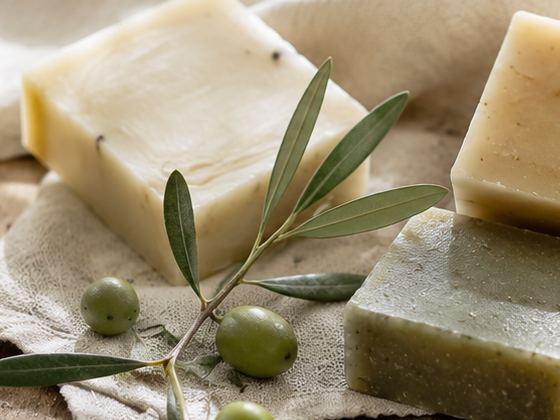
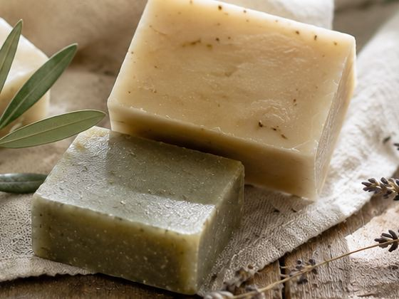
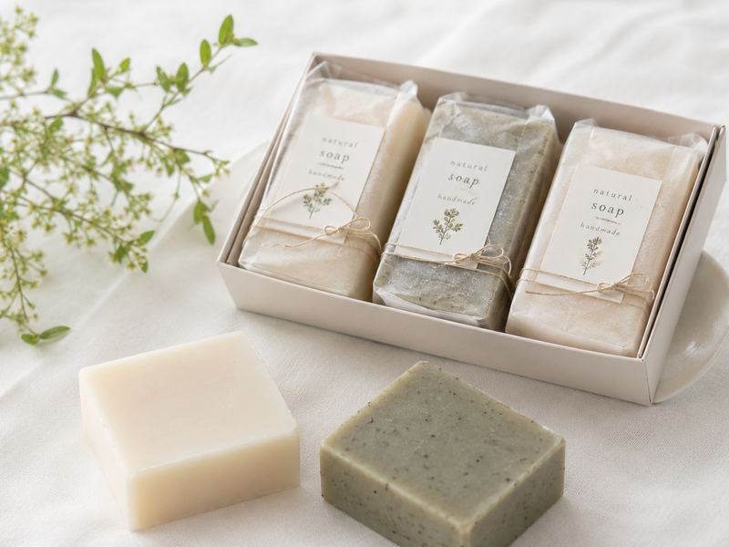

定番の3種類と、お試し用のミニサイズです。価格は税込です。

オリーブオイルを中心にした、香料を加えていない無香料のタイプです。
1個（90g） 1,200円
自家栽培のカレンデュラとラベンダー精油を加えた、さわやかな香り。
1個（90g） 1,400円
3種類を少しずつ試せる、はじめての方向けのセットです。
1箱 3,200円| メニュー | 内容 | 料金（税込） |
|---|---|---|
| ミニ オリーブ | お試し用の小さなサイズ（30g）。 | 450円 |
| ミニ ハーブ | お試し用の小さなサイズ（30g）。 | 500円 |
※すべての方の肌に合うとは限りません。初めての方は、腕の内側などでパッチテストをしてからお使いください。
※商品・価格はすべて、制作サンプル用の架空のものです。
※配合量の多い順に記載しています（制作サンプル用の架空の表示です）。